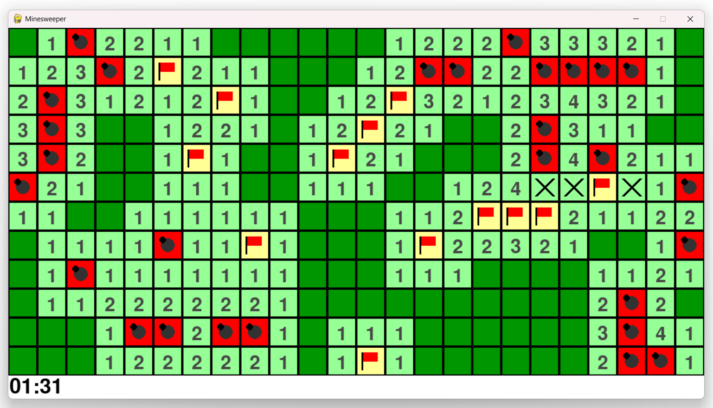

Counting neighboring bombs
Bombs get placed randomly first, then every cell counts how many bombs are sitting in its 8 surrounding cells.
def setup(self,grid):
if self.n == -1:
return
for i in range(-1,2):
for j in range(-1,2):
if (i,j) != (0,0) and x+i >= 0 and x+i < width//size and y+j >= 0 and y+j < height//size:
try:
if grid[self.x+i][self.y+j].n == -1:
self.n += 1
except:
passself.n doubles as two different things depending
on its value, -1 means the cell itself is a
bomb, any positive number is how many bombs are touching it.
The i, j loop just checks all 8 neighboring
offsets, skipping (0,0), which would be the
cell itself.
Flood filling empty space
Clicking a cell with zero neighboring bombs cascades outward, automatically revealing its whole neighborhood, and recursively continuing wherever that neighborhood also touches zero bombs.
def reveal(self,grid):
self.revealed = True
if self.n == -1:
return False
if self.n == 0:
for i in range(-1,2):
for j in range(-1,2):
if (i,j) != (0,0) and self.x+i >= 0 and self.x+i < width//size and self.y+j >= 0 and self.y+j < height//size:
try:
if grid[self.x+i][self.y+j].n != -1 and not grid[self.x+i][self.y+j].revealed and not grid[self.x+i][self.y+j].flag:
grid[self.x+i][self.y+j].reveal(grid)
except:
pass
return TrueEach neighboring cell only gets revealed if it isn't already revealed and isn't flagged, that second check matters, without it the flood fill would happily reveal cells you've deliberately marked as bombs.
Flags and bombs, drawn by hand
There's no sprite sheet here, every tile is drawn directly with pygame's own shape primitives. A flag is just two lines and a small rectangle, a bomb is two overlapping circles.
pygame.draw.rect(win,(255,255,150),(self.x*size,self.y*size,size,size))
pygame.draw.line(win,(0,0,0), (self.x*size+size/5,self.y*size+size/5),(self.x*size+size/5,self.y*size+size/5*4),3)
pygame.draw.rect(win,(255,0,0),(self.x*size+size/5+2,self.y*size+size/5,size/2,size/3))Winning, losing, and getting flags right
Clicking a bomb sets the game to a dead state and reveals the entire board at once, this is where flag accuracy actually gets shown. A flag sitting on a real bomb stays drawn as a flag, but a flag on a cell that turns out safe gets crossed out with an X instead.
elif self.n > 0:
pygame.draw.rect(win,(150,255,150),(self.x*size,self.y*size,size,size))
if self.flag:
pygame.draw.line(win,(0,0,0),(self.x*size+size/5,self.y*size+size/5),(self.x*size+size/5*4,self.y*size+size/5*4),5)
pygame.draw.line(win,(0,0,0),(self.x*size+size/5,self.y*size+size/5*4),(self.x*size+size/5*4,self.y*size+size/5),5)
else:
num = font.render(str(self.n), True, (70, 70, 70))
win.blit(num, (self.x*size+size/3,self.y*size+size/4))This branch only runs for non-bomb cells (self.n >
0), so a flag showing up here means you flagged a
cell that wasn't actually dangerous, hence the X instead of
a number.

Winning works a little differently than you might expect, rather than checking specifically that every safe cell is revealed and every bomb is flagged, the game just tracks a running count of revealed-or-flagged cells, and considers itself won once that count reaches the total number of cells on the board.